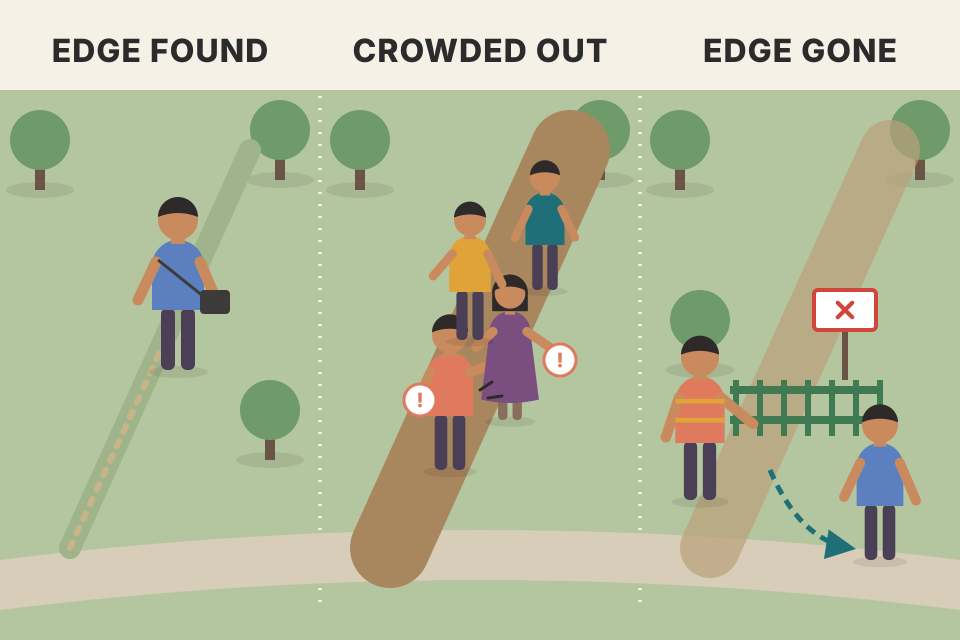
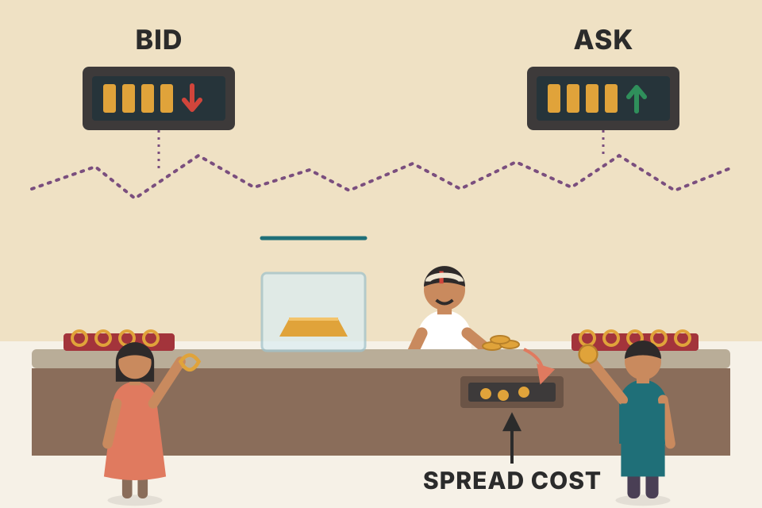
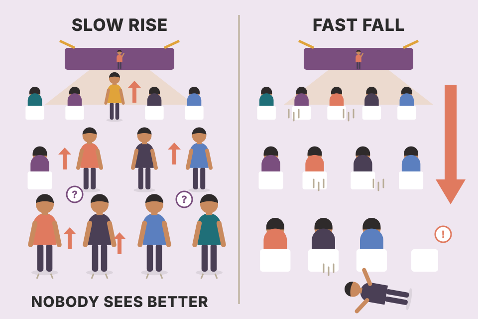
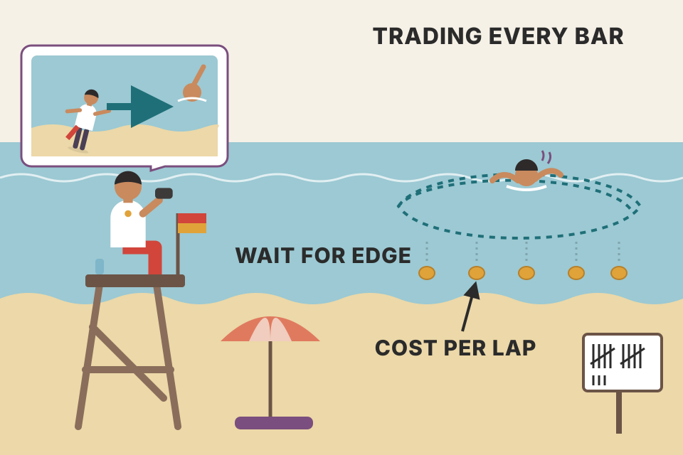

Professors say the price already holds all the news, and then wanders at random. If so, beating the market is only luck. Grimes takes that seriously. He shows which replies fail and which hold up. Then come newer theories that leave room for skill. Every chart here runs on simulated prices. Simulated results are not proof about real markets.
Two people look at the same price chart. One is a trader. She sees a pattern and wants to buy. The other is a finance professor. He says the pattern means nothing. Who is right?
The professor's case has two parts. The first is the efficient markets hypothesis, or EMH. It says the price already holds all the news. Only a surprise can move it, and nobody can predict a surprise.
The second is the random walk hypothesis, or RWH. It says each price step is like a coin flip. If both are true, no chart reader can win for long, except by luck.
Grimes does not laugh at this. He works through it in four steps. First he states the professors' claim. Then he throws out the weak replies that traders love: wild crash days, the slow rise of stocks, star fund managers. None of these hurts the theory.
Next he lists the replies that do hurt. People panic and make mistakes. News takes days to sink in. Bubbles last for years. Calm days and wild days come in bunches. Last, he shows newer theories that leave some room for skill.
His verdict is modest. Markets are close to random most of the time. Your job is to trade only in the few moments when they are not.
| Word | What it means, in plain words |
|---|---|
| Efficient market | A market where the price already holds all the known information. No one can use that information to win. |
| Random walk | A path made of steps that do not depend on earlier steps. Think of a coin flip for each step. |
| Return | The change in price over one period, as a percentage. A day that goes from 100 to 101 has a return of +1%. |
| Edge | A real advantage that repeats. Over many trades you come out ahead of plain luck. |
| Volatility | How much price jumps around. It is the usual size of the moves, not their direction. |
| Risk-adjusted return | Profit measured against the risk you took to get it. More profit with the same volatility is the real win. |
| Drift | A small, steady lean in one direction. Stocks lean upward over many years. |
| Fat tails | Huge moves happen far more often than the textbook bell curve says. |
| Liquidity | How easy it is to buy or sell without moving the price. A busy market is liquid. A sleepy one is illiquid. |
| Bid, ask and spread | The bid is the best price a buyer offers now. The ask, or offer, is the best price a seller wants. The spread is the gap between them. |
| Autocorrelation | Memory in a series of numbers. If an up day makes the next up day more likely, returns are positively autocorrelated. |
| Arbitrage | Buying what is too cheap and selling what is too dear, to pocket the gap. This is the trade that should fix wrong prices. |
Sections 01 to 03 state the professors' claim. Sections 04 to 08 are the weak replies. Sections 09 to 16 are the strong ones. Sections 17 to 21 are the newer theories. Short on time? Read section 22 first. It is the whole verdict in a few lines.
The chapter is one argument in four steps. First it states what the professors claim. Then it clears away the weak replies that traders usually make. Then it lists the replies that really do trouble the theory.
Last, it shows the newer theories that grew out of those troubles. It ends on what all this means for a trader's job. The chart below is the same story as a map.
Picture a busy trading floor. Thousands of people fight to pull profit out of the market every day. Now picture a quiet university office. A professor studies the same prices and says the fight is pointless. This chapter puts those two rooms side by side.
Grimes opens with a line from Einstein about theory. A good theory uses as few basic parts as it can, and keeps them as simple as it can. But it must never get so simple that it fails to explain a single real observation.
Keep that in mind. The whole chapter is about a theory that is beautifully simple, and maybe too simple.
Grimes says the gap between theory and practice is wider in finance than almost anywhere else.
On one side is an army of traders. They go to battle every day to pull profit out of markets. Most of them fail. A few succeed. Only a handful keep succeeding for many years. Their methods range from basic to very advanced. But they all ask one question: how do we make money here?
On the other side are the academics, the university researchers. They study the same markets with strict, careful maths. Many of them conclude that prices are basically random and cannot be predicted.
If they are right, steady trading profit is impossible. All the traders' work is wasted. So before you spend years learning to trade, it is worth hearing the professors out.
A casino floor and a statistics department are looking at the same roulette wheel. The players see streaks and "hot" numbers. The statisticians see a wheel with no memory. If the wheel has no memory, the players' notebooks are worthless.
The chapter asks the same thing about the market. Does its wheel really have no memory? And if it sometimes does, when? Where the picture breaks: a roulette wheel never changes. A market is made of people, and people change how they act.
The two camps do not argue about different facts. They argue about what the facts mean.
An academic test asks a wide question. Is there any pattern that a statistic can find, on average, across all the data? A trader asks a narrow one. Are there a few moments, which I can spot in advance, where the odds tilt my way?
The same prices can answer "no" to the first question and "yes" to the second. Much of this chapter is about how that can happen.
trader_returns_reality.md).A company reports great profits at 9:00. By 9:01 its share price has already jumped. You read the news at lunch and think of buying. Are you early, or far too late?
The efficient markets hypothesis (EMH) says you are too late, always. It is one of the foundations of modern finance. Its core idea: all available information about an asset is already built into its price. An asset is anything you can trade, such as a stock.
How does the information get in? The theory says traders act rationally when news arrives. Rationally means with a cool head and good reasons. They weigh how likely each outcome is. They also weigh how much each outcome is worth to them. Economists call that worth marginal utility.
The last step is the important one. New information arrives at random. Nobody can predict it. So the price moves it causes cannot be predicted either.
Grimes notes that traders usually wave the theory away without a hearing. Maybe they see no practical use for it. Or maybe they dislike what it implies. If it is true, trading of any kind is a waste of effort.
The exact claim is this: no one can make steady profits after adjusting for risk. A risk-adjusted profit is profit measured against the risk you took to earn it.
The classic EMH comes in three forms. They run from the strongest claim to the weakest:
Strong form. There is very strong evidence against it, in theory and in practice. It lives on mainly as an idea on paper.
Semi-strong form. Think of the moment a company's earnings report comes out, or a crop report for a farm product. This form says price jumps to the right level at that instant and stays there. The only extra movement is a small random wiggle from noise traders. Those are people who trade for no good reason.
And because news arrives unpredictably, so do the moves.
Weak form. The academic world largely accepts this one. The reason given is the same again. Information arrives at random, in both its timing and its content. So its effect on price is random too.
The semi-strong and weak forms are harder to judge than the strong one. For both there is good evidence in favour and good evidence against.
Technical analysis means reading price charts to decide when to buy and sell. If the weak form holds, no price pattern can predict anything. Then technical analysis is a waste of time. Grimes adds that fundamental analysis, the study of a company's business and profits, would be a waste too.
He admits this is hard for many traders even to think about. But the research at least gives you important points to ponder.
Three nested rings of "what is already in the price". The inner ring is the price history itself. The middle ring adds every public report and headline. The outer ring adds the secrets in boardrooms. Each form of the EMH claims a bigger ring.
Pick a piece of information below. See which forms say it can no longer earn you money. Where the picture breaks: the rings look sharp, but real information is blurry. A rumour can be half public and half secret.
The engine of the EMH is competition.
Say a piece of information predicts a rise. Rational traders would buy at once. Their buying pushes price up. It keeps rising until the information has nothing left to say.
What can still move the price after that? Only new information. And new information is a surprise by definition.
So the theory does not claim that prices are meaningless. It claims they are so full of meaning that only surprises can move them. Each form draws the line of "already known" in a different place.
Flip a coin 100 times. Step up for heads, down for tails. Draw the path. It will look a lot like a stock chart, with "trends" and "tops" that mean nothing.
That path is a random walk: each step is independent of the steps before it. The random walk hypothesis (RWH) is a close cousin of the EMH. It says price changes can be described by random walks. The book points back to its Chapter 2 for how random walks are built and used to model prices.
How well does the theory fit real prices? Grimes' answer: no one is really sure.
Liquidity is how easy it is to trade without moving the price. Transaction costs are what you pay on every trade, such as fees and taxes.
The bid is the best price a buyer offers right now. The ask, also called the offer, is the best price a seller wants. Trades land on one or the other. So the last price hops between them even when nothing has changed. That hopping is bid-ask bounce. Section 8 shows it on a chart.
He skips the deep maths and gives the average trader one thing to accept. Random walks describe prices far more often than most traders wish. Most of the time, most prices wander in a roughly random path.
In that kind of market there is no edge to find. An edge is a real advantage that repeats over many trades. So expect long stretches where the right move is to do nothing.

A shortcut through a park. Once a few people find it, a path wears into the grass. Then the city puts a fence there.
A published market pattern is a shortcut that gets crowded. Everyone who reads the paper walks it. Their trades flatten the very pattern they came for. Where the picture breaks: a fenced path stays shut. A market pattern can come back quietly once the crowd has left.
Before the dashed line, each day leans a little in the direction of the day before. After the line, that lean is gone. Slide the cost up and watch the profit shrink.
This simulation is mine, not the book's. It builds a series of daily returns. A return is one day's price change, as a percentage.
At first, today's return leans slightly in yesterday's direction. The first slider sets how strong that lean is. Its label says lag-1 autocorrelation, which is the link between each return and the one before it. At the "published" line the lean is switched off. It is as if traders had traded the pattern away.
The strategy is as plain as it gets. It holds yesterday's direction. Before publication its profit line climbs. After, it flattens into a random wander.
Now add cost. A basis point, or bp, is one hundredth of one percent. Add a few basis points per trade and the early edge shrinks too. This is Grimes' point about costs and bid-ask bounce. A violation can be real in the statistics and still be impossible to trade.
Look at the price panel as well. You cannot see the edge with your eyes either way. The two halves of the chart look the same.
backtest_results_summary.md).price_physics_basics.md says that over minutes and days the price is "almost all shaking". That is why random walks fit the direction of short moves so well.A trader finds a pattern that works. He shouts, "The professors are wrong!" Is he right? Usually not. This section shows why the theory is much harder to knock down than it looks.
A large body of research has grown around the EMH. Much of it is heavy maths, and hard going for the rest of us. But the punch line is clear. Burton Malkiel put it this way in 2003. Such markets do not allow investors to earn above-average returns without accepting above-average risks.
Traders take one of two attitudes. Many ignore the EMH. They find it too abstract and "academic", and they mean that as an insult. Others try to disprove parts of it.
Grimes says most of those attempts in trading books miss the mark. They misunderstand a few key points:
So any test is a joint test. It tests the theory and one exact version of the theory at the same time. Knocking down that one version, even firmly, does not kill the whole theory.
In Grimes' words, the EMH is not one thing or one fixed set of beliefs. It is a way of thinking about markets and the problems their participants face.
So what do you do with this? Stop trying to win the debate. Ask the smaller question that pays: is my pattern stable, and does it earn money after costs?
Testing a recipe by tasting the cake. If the cake is bad, what failed? The recipe, the oven, the flour or the cook? A bad cake tells you something in the bundle failed. It does not tell you which part.
EMH tests are cakes. The theory always comes baked together with a model of "normal" returns. Where the picture breaks: a cook can bake again and change one thing at a time. Market history runs only once.
How can a market be efficient and still not random? This explanation is mine, not the book's.
An efficient price is the fair price for the risk you take. But risk changes over time. After a crash, say, investors demand more return before they will hold stocks. So the fair expected return changes too. Returns can then become partly predictable, and still nobody is leaving money on the table.
Now the reverse. A price can wander at random while it sits far away from fair value. So a random walk does not prove the price is right.
This is why "I found a pattern" does not mean "I disproved the EMH". And "it is random" does not mean "it is efficient".
For a trader, the useful test is narrower and cleaner. Is the pattern stable? Does it pay after costs and risk?
backtest_results_summary.md). Slippage is the gap between the price you wanted and the price you got.On one day in October 1987, the US stock market fell so hard that the textbook said it could never happen. Not once in the life of the universe. Yet it happened. So is the textbook wrong, or the market?
The textbook tool here is the normal distribution, also called the bell curve. A distribution tells you how often each size of result shows up. The bell curve says most results sit near the average, and far-out results are very rare. It describes many things in nature, and statistics leans on it heavily.
But many writers point out that it fails badly on financial markets. Grimes names Taleb (2008) and Mandelbrot and Hudson (2006), among others.
His Figure 10.1 shows it. It is a histogram, a bar chart that counts how many days had each size of return. The data is daily returns of the Dow Jones Industrial Average (DJIA) from 2000–2010. A solid line on top shows the bell curve those returns should follow. Compared with the curve, real returns have:
In practice, markets are both more boring and far wilder than the bell curve predicts. More quiet days near the average. More monster days in the tails.
The tails are the striking part. To measure them you need one word. Standard deviation, written σ, is the usual size of a day's move away from the average. A "3σ day" is a move three times the usual size.
The sample has 2,772 trading days. In it there are eight days with moves that should each happen less than once in a million days. That is true only if the normal distribution is the right model. Grimes calls that "if" the key point.
The full DJIA history holds something stranger: a 22 standard deviation day, the 1987 crash. Under a normal curve the chance of that is too small to grasp. Grimes gives a picture. Suppose you had made a million normal price bars every second since the Big Bang. You would still be very unlikely to find even one such day.
A distribution with many extra tail events is called leptokurtic. Most people say "fat tails".
The 2007–2008 financial crisis put the danger of fat tails in the public eye. Many stocks, indexes and derivatives made "one-in-a-million" moves day after day. A derivative is a contract whose value comes from another price, such as an option.
Grimes says the choice is simple. Either we keep seeing, almost every week, events that should not happen once in a million years. Or the maths models we use to describe those events are wrong.
Many traders and authors offer this as proof against the EMH or the RWH. It is true that the normal curve fits market data poorly. That is well established, and almost no one argues the other side.
Grimes adds an aside. Many risk-management systems and option-pricing models still assume normal returns at their core.
But fat tails, or any other non-normal shape, are no evidence at all against either the EMH or the RWH. The box further down explains why. For you the lesson is about risk, not prediction. Expect the huge day to come more often than any bell curve says.
Most days the market is a sleepy commute, quieter than the bell curve expects. A few days a year it is a pile-up on the motorway, far worse than the bell curve allows. The average day looks normal. The whole distribution does not.
Where the picture breaks: a pile-up blocks one road. A market crash hits almost every stock at the same time.
The slider sets how fat the tails are. A lower number means fatter tails. Tick the log scale box to see the far ends clearly.
Start with one fact. Under a normal curve, a move bigger than 4.89σ has a one-in-a-million chance per day. That counts moves in either direction.
Over 2,772 days you would expect 2,772 × 0.000001 ≈ 0.003 such days. The sample has eight. That is roughly 3,000 times the expected count.
Now slide k to 22 to see the 1987 day. The chance is about 3 × 10−107. That is a decimal point followed by more than a hundred zeros.
The arithmetic here is mine, not the book's. So is the Big Bang count. I took 1 million bars a second for about 13.8 billion years, which gives ≈ 4.4 × 1023 bars.
Why do fat tails not disprove the random walk?
A random walk makes one claim only. Each step is independent of the past. It says nothing about the shape of the step's distribution.
So draw independent steps from a fat-tailed distribution. You get a random walk with no memory at all, and with fat tails.
The simulation does exactly that. Every day is an independent draw from a Student-t distribution. That is a bell curve with heavier tails. The slider sets its degrees of freedom. A lower number means fatter tails. The top value, 31, stands for "plain normal".
Nothing in it can be predicted. Yet the histogram shows the tall peak, thin shoulders and fat tails of Figure 10.1. The readout calls this excess kurtosis, a number that is 0 for a normal curve and higher for fat tails.
Fat tails do matter for risk. A stop is the price where you give up and get out. Position size is how much you buy. Build a stop, a position size or an option price on the bell curve, and it will underestimate the big days.
This part is not in the book. I added it.
There is another route to fat tails: changing volatility. Volatility is how much price jumps around. Mix calm days with a few wild periods (section 16). The pooled histogram is fat-tailed even if each single day is normal. Real index returns show both effects.
Two numbers above come from the standard formula for the tail of a normal curve. They are the 4.89σ one-in-a-million threshold and the 3 × 10−107 figure. The calculator above computes them.
trading_equations.md: Black–Scholes is the classic formula for pricing options. It and the expected-move formulas assume normal returns.Buy a big random basket of stocks. Hold it for twenty years. You will very likely make money. Does that prove prices are not random?
It does not. Over long histories some assets show a baseline drift, a slow steady lean in one direction. Over any long holding period, stocks tend to go up. It is tempting to call that slight upward lean non-random. It is not.
In the plain random walk, the chance of a step up equals the chance of a step down:
Nothing forces those two to be equal. Make the chance of an up-step a little bigger than the chance of a down-step. Now you have a random walk with a positive drift. Each step is still independent. Each step still cannot be predicted.
The drift in stocks is well established. It is why index funds are so common. An index fund buys every stock in a list such as the Nifty 50, to capture this drift for its investors.
It also sets a goalpost. A trader must beat this baseline return without taking more risk (volatility) than the baseline. Here are four levels, from easy to hard:
So drift does not disprove the EMH or the RWH. Both theories embrace it. It is the "above-average" in Malkiel's line. Efficient markets do not let you earn above-average returns without taking above-average risk.
What do you do with this? Never judge a system by "it made money". Ask what holding the index would have made, at the same risk.
A drunk walking home down a slight slope. Every step is random, but the hill tilts things. After enough steps he is further downhill than uphill. Predicting the next step is still hopeless.
Riding the slope is easy, so it earns no credit as skill. Where the picture breaks: a hill stays the same. The market's slope can flatten or even turn down for years.
Use the default settings. The system makes 14% a year with 32% volatility. The index makes 8%. So the system "beats" the index.
But put 2× leverage on the index. Now it gives 16% at the same 32% volatility. The system loses to plain borrowing. Return per unit of risk is what counts.
This calculator is mine, not the book's. It is simplified. It ignores the cost of borrowing and the risk-free rate, which is the return on a safe deposit.
Each step is ±1%. The chance of an up-step is p. Then the average step is (2p − 1) × 1%.
At p = 0.52 that is +0.04% per step. Compare that with the 1% of noise in every step. The lean is tiny. So a single path can still end lower.
Now average 50 paths. The slope shows clearly.
That is the whole story of drift. It is a small, steady edge in the coin. You cannot see it step by step. Over many steps it is obvious. And anyone can collect it by holding. So it is the baseline, not the prize.
price_physics_basics.md: Nifty's drift is about 0.05% a day against 0.95% of noise. So the chance of an up day is only about 52%. Over a year it rises to about 79%. That table is this slider at p ≈ 0.52.index_funds.md and trader_returns_reality.md: the index is the benchmark to beat. Over 10 years, 76% of Indian large-cap funds did worse than it (SPIVA India, Dec 2025).backtest_results_summary.md).A fund manager has beaten the market ten years in a row. Surely that proves skill, and proves the professors wrong? Not so fast.
Critics of the EMH often point to funds or traders who beat the market. The academics know the stakes. A group that consistently beat the market would be a serious challenge. So these claims have been studied with care.
Note one thing first. The EMH does not say that no one can make money trading. Many people assume it does.
Random data produces long lucky runs, more than you would guess. Add survivorship bias: you only see the winners who are still around, never the losers who quit. Together these guarantee a few traders with great records by pure chance.
Grimes gives a picture. Put 10,000 people in a room. Each flips a fair coin. Heads, you are a winner and you stay. Tails, you leave. After one flip about 5,000 are left. After 10 flips, give or take, 10 remain. Each has a "remarkable" record.
Show someone one of those records. Do not say how the person was picked. The chance of flipping 10 heads in a row is less than one in a thousand. So it is fair to think this is skill.
Now add the missing fact. These 10 are what is left of 10,000 starters. The picture changes. Out of context they look like experts. In context they are plainly the result of chance.
The test: watch them going forward. Start by assuming they have no skill. That should always be the first guess. Then about half should leave on each new flip.
Suppose instead they do something remarkable. Say 75% of them flip heads every time, from the moment we picked them. Then we might start to believe they have an edge.
But if they keep leaving at about 50% a flip, we know the truth. Their past records, however impressive, came from a random process.
Some traders and funds do beat the market. The academic view is that they may well come from the same kind of selection.
Mutual funds pool money from many small investors. The companies that run them sometimes grow winners on purpose. They launch many products, across strategies and kinds of asset. After a while they keep the winners and market those to the public. Going forward, those funds as a group do not outperform.
Market history is full of long winning records, some of them hard to explain. In the end they revert to the mean, which means they drift back to average. Grimes names two well-known records that have faltered a bit in recent years. One is Value Line. The other is Bill Miller and the Legg Mason Value Trust.
He lists three possible explanations:
Either way, one example of a fund or trader that beat the market is not a serious challenge to the EMH. That holds even if the record is risk-adjusted.
Use this on yourself too. A great month, or a great backtest, is a record picked after the fact. Believe it only when it keeps working on new trades.
A lottery winner on TV explaining their "system". The system is the selection. You only ever interview winners.
Where the picture breaks: nobody thinks a lottery needs skill. In trading, skill may be real for a few, and that makes luck much harder to spot.
Each flip keeps half the room. So after 10 flips you have 10,000 × 0.510 = 10,000 ÷ 1,024 ≈ 9.8 survivors.
For one person, 10 heads in a row has a chance of 1 ÷ 1,024 ≈ 0.098%. That is under one in a thousand.
Now the forward test, over 3 more flips. Survivors with no skill keep 0.53 = 12.5% of the group. Survivors with 75% skill keep 0.753 ≈ 42%. The gap shows up fast.
The track record was used twice. Once to pick the people. Then again to judge them.
That is the flaw. A number you used to select cannot also be your evidence. Selection guarantees that the number looks good.
Only data that arrives after the selection is a fair test. That is why the forward flips, the amber bars, separate skill from luck in a few rounds. The 10 qualifying flips, in grey, look the same in both worlds.
backtest_results_summary.md). It is the same trap, with stocks in place of people.You open the chart of a tiny stock that hardly trades. Price zigzags up and down like clockwork. Buy low, sell high, repeat. It looks like free money. It almost never is.
New researchers often find what look like glaring inefficiencies in illiquid markets. Illiquid means few trades and few traders. Grimes gives three kinds: inactive futures contracts, rarely traded currency pairs, and microcap stocks, the shares of very small companies.
He warns that these price records may show nothing you can really use. There are four traps:
Recall the two prices. The bid is the best price a buyer offers. The offer, or ask, is the best price a seller wants. The gap between them is the spread.
In an illiquid market the spread is wide. Price changes are often nothing more than trades bouncing between the bid and the offer. To profit, you would need to buy on the bid and sell on the offer, reliably. Grimes calls that a most unrealistic assumption.
A print is one recorded trade. Quoted prices are almost always the last trade. This matters most when you compare two markets.
Take two closely related markets. One trades all day. The other rarely trades. On the price records you will see long periods where they seem to move apart. But you are comparing live trades in one with a single old print in the other.
Try to trade that gap and it is gone. The bid and ask of the illiquid market track the liquid one closely. The bid-ask spread is the true value, because any trade will happen there first. It will not happen at a print from many minutes or hours ago.
Grimes stresses that this is not a made-up example. It happens every day in options, back-month futures, stocks with multiple share classes, and stocks listed in several countries. Back-month futures are the contracts that end many months from now. Few people trade them.
Some thin stocks trade only a few hundred shares a day. Say you find a real inefficiency, even after allowing for market structure. You still may not be able to use it at any size that matters.
At times in history, one group has held an advantage over everyone else. The advantage came from the market's structure or from lower costs.
Their profits came from imbalances in the structure of the market. They did not come from inefficient prices. So they are not evidence against efficient markets. And markets have tended to evolve and erase these advantages over time.
The rule for you: before you trust a pattern in a thin market, check the live bid and ask. Then ask how many shares you could really trade.
Grimes gives three clear examples of such groups:

A shop has a "buy" price and a "sell" price for gold. The last customer sold, so the board shows the low price. The next one buys, so it shows the high price. The board jumps up and down all day though gold's value never moved.
A chart of the board looks like a goldmine. It seems to be mean-reverting, which means it keeps snapping back to its average. But every trip through the shop costs you the gap. Where the picture breaks: a shop sets its own two prices. In a market, many traders compete to set the bid and the ask.
The slider sets the spread in basis points, or bps. One basis point is one hundredth of one percent.
In chart A the true value barely moves. Each trade lands at the bid or at the ask, at random. So the last price jumps by about one spread, and then tends to jump back.
That makes one price change and the next strongly negatively correlated. Negative correlation means that when one goes up, the other tends to go down. Here it is about −0.5 when the spread dominates.
It looks like a pattern. A rule that bets against every tick harvests it beautifully at last-trade prices. A tick is one small price change. Betting against a move is called fading it.
Now fill the same rule at the real quotes. You buy at the ask and sell at the bid. Every round trip pays the spread. The profit turns into a loss.
In chart B, the gap between the twins' last trades can be large. But look at the twin's mid-quote, the point halfway between its bid and ask. The gap between that and the active price is almost zero. The big gap exists only because of when the twin last traded.
This is my addition. Many Indian stocks are listed on both NSE and BSE. A thinly traded BSE print can look "off" against the live NSE price. The reason is the same as in chart B.
The same goes for options on NSE. Strikes far from the current price, or in far months, can show last prices that are hours old. Check the bid and ask before you believe any gap.
breakeven_move_fyers.md: a trade must first move about 0.1–0.2% intraday to pay FYERS charges and slippage. For delivery trades it is 0.3–0.4%. An "edge" the size of a spread does not clear that bar.order_flow.md covers limit orders, market orders, the order book and the spread. Those are the mechanics behind chart A.So far every attack on the theory has bounced off. Now come the ones that leave a mark. Before he starts, Grimes makes his aim clear.
The EMH splits people sharply. There are many on both sides. Some people in universities, and in parts of the finance industry, have built whole careers on defending it.
His goal is not to disprove the EMH. He wants to understand what kinds of evidence could be a serious problem for its believers. And there is a prize in it for you. If markets are less than efficient, some of these fair challenges might point the way to profits.
A structural engineer does not try to prove a bridge will fall. She looks for where it bends most under load. The seven sections that follow are the places where the EMH bridge bends.
Where the picture breaks: an engineer can load a bridge and measure it. Nobody can run the market twice to test a theory.
Compare this list with the one in sections 4–8. Those replies attacked things the theory never claimed. It never said returns are normal. It never said that no one ever wins.
The new ones attack things the theory needs. It needs rational people. It needs prices that adjust at once. It needs arbitrage that works. And it needs price steps with no memory.
News breaks about Apple, whose stock symbol is AAPL. Within seconds, a different company with the symbol AAP jumps too. It has nothing to do with Apple. People typed the wrong letters. Would a perfectly rational market do that?
Classic EMH assumes a tidy chain. People in the market receive new information. They process it. They act at once, and rationally. Their quick but well-considered actions move price instantly to the level the information justifies.
Models matter because they help us understand reality. But every model simplifies. That is what a model is. No one thinks a model is perfect. And no one is quite sure how far it can drift from reality and still be useful. Building even a simple model is a mix of art and science.
Grimes tells an old joke. A group of scientists is stranded on a desert island. They have a case of canned food and nothing to open it. The physicist, the chemist and the biologist all try and fail. Then they ask the economist. He says it is easy: first, assume a can opener.
Some EMH assumptions fall well short of reality. Here are four:
A fire alarm in a building with two doors labelled "EXIT" and "EXTT". Some people run through the wrong door before they read it. Nothing about the second door changed, but it got a rush anyway.
Where the picture breaks: the people who took the wrong door stay outside. Traders who bought the wrong stock sell it again, and the price falls back.
This toy model is mine. A burst of buying hits the stock with the news. A small share of that burst lands in the look-alike by mistake.
The look-alike is a smaller stock with fewer traders. So even a few percent of the buying pushes it a lot. Nothing about its value has changed. Once the mistaken buyers notice, they sell, and the spike fades back.
A rational, instant market would never show that spike. The move exists only because real people with real fingers place real orders.
order_flow.md has Kyle's lambda: price change = λ × net order flow. Net order flow is buying minus selling. A thin stock has a bigger λ. So the same stray orders move it more than they move a liquid stock.A stock trades at $40. Bad news hits, and the stock is now worth $30. How does price get from $40 to $30?
Most EMH models give a clean answer. The news is processed, and the stock moves at once to the correct new level. Grimes' Figure 10.2 draws it. A flat line drops in one straight step at the moment of the news. Then it stays flat.
It rarely works like that. Prices are much more likely to overreact or underreact. They may even move the wrong way at first.
These are moments of great doubt. Wide spreads and thin liquidity often make them worse. Market makers are traders who always stand ready to buy and sell. They and other liquidity providers step back. Spreads widen. Large orders move price far more than usual.
Price discovery is the market's search for the right price. It works. But it can be messy, noisy and even dangerous.
Figure 10.3 shows the more realistic version. Price plunges well past the new level. Then it swings above and below that level about four times. Each swing is smaller than the last, until price settles.
There is more. Not everyone gets the news at the same time. And people do their homework on different schedules.
Grimes gives an example. It is the middle of a trading day. A well-known drug company has been waiting for approval of a new drug. The approval must come from the Food and Drug Administration (FDA), the US regulator for medicines. The company is denied an expected FDA approval.
The news is clearly bad. There is still room to argue about how much it hurts profits, margins and the company's place in its industry. Then the reaction comes, in waves:
The day traders. They are people, so mistakes can and do happen. Some trade the wrong side at first, buying when they should sell. They may flip several times as they try to get set for the move. A few plan to hold for hours to weeks. But most watch short-term moves and want small, quick profits.
The public. Their orders arrive in a rush around the media release. Some are filled much later. What many of them miss is that this is not breaking news at all. The battle is over. Much of the price discovery is already done.
Grimes adds a dry note. Some people repeat this many times. That argues against the idea that people act rationally in their own interest.
The institutions. In this setting a $40 stock could easily swing $10 in the first hour. Yet a very large pool of money has not acted. Hedge funds, pension funds and other big funds may hold a large part of the company's stock.
They cannot decide in seconds, because many people share the decision. Many funds also have rules against reacting to news at once. And as a group they may own most of the shares. Positions that big cannot be sold in seconds.
They must be cut into smaller pieces and sold over days to weeks, so the selling does not crush the price.
Researchers are quick with a reply, and Grimes says they are quite correct. Prices may not move cleanly. But overreactions are about as common as underreactions. That stops traders from making easy, reliable profits.
If the swings are random and cannot be predicted, the market is still efficient. Grimes notes that here the RWH can be violated while the EMH still holds.
From his own experience, he agrees there are no easy profits here. But he leaves a door open. There may be chances to profit from these first mispricings. The academic tests may have missed some of the factors that traders use in their decisions.
This is his picture of reality: messy, dirty and ugly, and very different from the ideal. Some traders react with emotion. Many trade off the price movement itself, not off a calm reading of the news.
In the ideal world, $40 was the right price, because prices there always hold all information. The news now justifies $30. So price would go to $30 instantly, with no prices in between.
The real world does not work that way. There is huge volatility around the release. And big funds adjusting their positions are felt for days or weeks after. Some are selling. Some are buying, because their models now show the stock at a discount to its fair value.
A stone dropped in a bath. The ideal theory says the water level rises once and is still. In real life it sloshes over, falls back, and sloshes again. It takes a while to settle at the same new level.
Where the picture breaks: water always settles at one known level. After news, nobody knows for sure what the right new price is.
The 400-event test is mine. Each news item carries a true new value. The first-hour price misses that value by a random percentage. A positive miss is an overshoot. A negative miss is an undershoot.
Two traders play. The "fade" trader bets that the first-hour move partly reverses. The "follow" trader bets that it continues.
Set the bias to 0. Overshoots and undershoots are now equally common. Both traders average about zero before costs, and both lose after costs. That is the academic argument.
Slide the bias up, so that overreaction is more common. Now fading earns. Slide it down, and following earns.
So the trader's edge, if there is one, is knowing which events tend to overshoot, before the fact. That is exactly the kind of factor Grimes suspects the tests leave out.
Ideal world: the stock goes from $40 to $30. That is a 25% drop, with no trades in between.
Realistic world: the first hour alone can swing $10, a quarter of the price. Meanwhile the big funds take days or weeks to sell, and some value funds buy.
Two people in this story. To short a stock is to sell borrowed shares, hoping to buy them back cheaper. Buying them back is called covering. An insider who shorted at $40 and covered at $30 makes $10 a share (section 12).
A day trader buys at a "cheap" $29 in the first hour. He may still be early, if a fund needs weeks to finish selling.
intraday_swing_playbook.md). The first-hour slosh in news stocks is the raw material for that setup.Go back to the drug stock. Somewhere, a committee voted "no" before the world knew. Some people in that room knew the stock was about to fall. Could they have made money?
Strong-form EMH says no. It says all information is priced, even secret inside information, so you cannot profit from it. But clearly some people knew the approval would be denied before the news went out. They could have shorted at $40. Then they could have taken profits as the news hit the wires.
For strong form to hold, price would need some mystical way to adjust. It would have to reach the correct level the instant the FDA committee voted. That is before the newswires. Before the company itself knew. Before the news even left the room.
Grimes says to be suspicious of any market explanation that needs a deus ex machina. That is Latin for a god who drops in to fix the plot. Buying and selling move prices. Only those, and nothing else.
One more point. Regulators, at least in the United States, spend enormous time, energy and resources prosecuting people who trade on inside information. Why would they, if there were no money in it?
These are serious problems of logic. They are why strong-form EMH has few supporters today, even in universities. For you the lesson is simple. A price moves only when someone trades. So ask who is trading, and what they know.
A scoreboard that updates when the referee decides a goal. That is before he blows the whistle, and before anyone in the stadium has seen him. This is what strong form asks the price to do.
Where the picture breaks: a scoreboard has one operator. A price has no operator at all, only buyers and sellers.
A price is the last place where a buyer and a seller agreed. For it to drop, someone must sell at a lower price.
Before the release, who could know to sell? Only the insiders. And if they sell, they are profiting from the secret. That is exactly what strong form says cannot happen.
So strong form goes against itself. There are two cases. In one, the price stays at $40 until someone trades on the secret, and profits. In the other, it does not move at all.
Move the slider to see the gap between the two lines. That gap is the insider's chance to profit.
In 1720, shares of one English company rose to about nine times their price in a few months. Then they fell almost all the way back. Where was the smart money that should have stopped it?
Some forms of the EMH can allow short-term mispricing that comes from market microstructure. That is the plumbing of how trades get done. But there is also evidence that markets can stay mispriced for a long time.
In an efficient market, a wrong price is a chance to profit. Arbitrage is the trade that takes it: you buy what is too cheap, or sell what is too dear. A pool of educated, rational arbitrage money should quickly overpower any madness. That does not seem to happen.
History has many examples of a bubble: prices swell far above any sensible value, then deflate with astonishing speed. Grimes lists these. The first six are recent. The older ones show it has been going on for a long time.
| Episode (as listed by Grimes) | When |
|---|---|
| The financial crisis | 2007 |
| Crude oil at $150 | 2008 |
| Nasdaq stocks in the dot-com bubble | ≈2000 |
| Collapse of Long-Term Capital Management | 1998 |
| Asian financial crisis | 1997 |
| The Hunt Brothers and the silver market | 1980 |
| South Sea Bubble | 1720 |
| Dutch Tulip Mania | 1634 (book's date) |
| Commodity bubbles in ancient Babylon | antiquity |
His Figure 10.4 could be the chart of a high-flying tech stock from the dot-com bubble of 2000. In fact it is the share price of the South Sea Company from January 1719 to mid-1721.
For about a year the price sits quietly between 100 and about 130. In 1720 it climbs almost straight up, to about 950. Then it collapses, and by mid-1721 it is back near 120.
The evidence from ancient Babylon points the same way. Bubbles and busts are not a freak event. They seem to be a natural feature of markets. There is nothing new under the sun.
In a bubble, valuations usually swell to hundreds or thousands of percent of a fair value. A valuation is the price people put on a thing. This takes months or years. Then the bubble pops, as it always does. The bust follows, as the market quickly corrects itself.
That is hard to square with investors who always decide rationally. At the very least, something else is going on. For a trader, the warning is plain. A price can stay wrong far longer than you can stay in a trade against it.

A crowd at a concert: one person stands to see better. Then the people behind must stand. Soon everyone is standing and no one sees better. Sitting back down happens all at once, and much faster than standing up did.
Where the picture breaks: at a concert, standing costs you nothing. In a bubble, the people who bought last lose real money.
This toy model is mine. It has two kinds of trader. Value traders push price toward a flat fair value of 100. Trend chasers look at the recent average return. They add a fraction of it to today's return.
A burst of good news for 60 days starts a rise. With weak chasing, the value traders absorb it and price drifts back.
With strong chasing, each rise pulls in more buying. That buying makes the next rise. The value traders' pull is too weak to stop it. It runs until the news fades and the trend rolls over.
Then the same loop runs in reverse, and faster. Price overshoots below fair value.
So why did arbitrage fail? Not because no one saw the wrong price. It failed because betting against such a loop too early can bankrupt you. You go broke before you are proved right.
This is my addition. Most histories date the peak of Dutch tulip mania to 1636–37. The book gives 1634.
The toy shows an idea with a standard academic name: "limits to arbitrage". Rational money cannot always correct a wrong price, because the wrong price can grow first.
Banks and funds pay huge sums for fast data and smart analysts. They have done so for decades. Are they all fools?
Semi-strong EMH comes close to saying so. It says no one can earn above-average profits by analysing any public information. So there is no value in fundamental analysis, or in any analysis at all. Everything is in the price already.
Push that idea to its limit and it turns absurd. If it were true, no one would do any analysis. Then how would the information get into the price? No one would have a reason to study anything. In the end no one would have a reason to trade. Markets would collapse and cease to exist (Grossman and Stiglitz 1980).
In the real world, market information is quite expensive. Institutions, traders and analysts pay a lot for it. They pay even more to get it fast. Why would they keep doing that, decade after decade, if it were worthless?
The takeaway for you is hopeful, in a small way. Someone has to be paid for doing the work. That pay can only come from prices that are a little bit wrong.
A town where everyone trusts the weather forecast completely. So the town closes the weather station, since "the forecast already knows". Next week there is no forecast.
Where the picture breaks: a town can pay for its station with taxes. In a market, analysts are paid only by trading profits.
In the toy, some traders pay for information and some do not. The more who pay, the less mispricing is left for each of them. So the gain from being informed falls as the informed share grows.
People keep buying information until the gain only just covers its cost. At that balance point the price is almost efficient. The mispricing that is left is exactly what pays the analysts.
Now push the cost to zero. Everyone becomes informed and nothing is left over. But then the gain is zero too. Any tiny cost would make informing yourself a loss.
That is the paradox. A perfectly efficient market cannot pay for the work that makes it efficient. Real prices must stay a little inefficient, by about the cost of information.
A fair coin lands heads three times in a row. What is the chance of heads on the fourth flip? Still 50%. The coin has no memory. Does a market?
In a random walk, the answer is no. The chance of the next step up is usually very close to 50%, plus or minus any drift. It never changes with history. After three up-steps the fourth is still 50/50. Price has no memory, and every step is independent.
Autocorrelation is the statistic that measures memory. It deals with trends in data. If price changes have high autocorrelation, an up-step is more likely after an up-step.
Here is a simple way to hold it, though it is not always true. In an autocorrelated price series, prices tend to trend.
Many academic studies find no autocorrelation in returns. But the evidence is mixed. Other studies find strong autocorrelation.
The answer seems to depend heavily on the sample. Different timeframes can behave very differently. So can different periods of the same market. Grimes says this matches what he has come to expect, after trading many markets and timeframes.
A major theme of his book is that all market action is in one of two states. They are range expansion or mean reversion. In more familiar words: trends and trading ranges. Range expansion means price pushes out to new ground. Mean reversion means price keeps coming back to its average.
First, a warning for the academics. Their studies start by assuming that prices move at random. So perhaps not enough effort has gone into finding patterns that tell these two states apart in advance. Grimes uses the Latin term for "in advance", a priori. He calls the two states regimes.
Second, a warning for his own side. Some writers who support technical analysis suggest studying trends and ranges separately. Grimes laughs at this. It is like splitting random numbers into those above zero and those below zero. Then you act surprised that the first group has a higher average!
To be useful, you need something harder. You must define conditions, known beforehand, that predict autocorrelation over a limited stretch of time ahead.
That is one of the core jobs of good discretionary trading, where you decide by eye and not by fixed rules. The job is to spot the volatility environment that is most likely to come next. Much of his book is about the conditions and factors that help you make that call.
A room where half the people are nodding yes and half are shaking their heads no. Average all the head motion and the room looks still. The motion is real. It only cancels.
Where the picture breaks: in the room you can see who nods. In a market you must guess the state before it shows itself.
Lag-1 autocorrelation is the correlation between each return and the one before it. Correlation is a number from −1 to +1 that says how closely two things move together. Chart A is my simulation. Its trend stretches have +ρ. Its range stretches have −ρ. The Greek letter ρ is the strength of the memory.
Measure inside one state and you get roughly ±ρ. Measure over everything and you get about ρ × (2 × trend share − 1). That is zero when the two states take equal time.
The first button in part B shows the trap Grimes describes. Group numbers by their outcome and the groups must differ. That is how they were built. For pure noise the two averages are about +0.8 and −0.8.
The honest test labels each bar using only earlier bars. Here the label is the sign of the autocorrelation over the previous 40 returns. Then the test measures what happens next.
On a pure random walk the "trend" label predicts nothing. On the regime market it does predict, because regimes last a while. Real markets are somewhere in between. Where exactly is the open question.
indicators/kama_kaufman_adaptive_moving_average.md is this exact in-advance test. The Efficiency Ratio measures how straight a price move is. You compared today's ratio with the next period's. The correlation was about −0.03 across 188 stocks. A random walk gives −0.02. So labelling trends in advance did not work there.indicators/trend_vs_sideways_tools.md: you tried four trend gauges there. They were ER, ADX, Choppiness and MA slope. None of them predicted whether the next 10 days would trend.After one wild day in the market, what do you expect tomorrow? You cannot say up or down. But you can say "probably another big day". That one fact breaks the random walk.
Real prices show at least one very serious departure from random walks. A random walk has no memory of the past. But in real data, large changes are much more likely to follow large changes, and small changes to follow small ones.
What is probably happening? Markets respond to new information with big moves. Then the high-volatility mood lasts for a while after the first shock. The research calls this the persistence of volatility shocks. It produces volatility clustering: wild days come in bunches.
Grimes' Figure 10.5 shows it for the S&P 500 cash index, from mid-2008 through 2010. For each day it plots the size of the change in standard deviations, ignoring direction. Values under 2.0 are filtered out, so only the big days remain.
Those big days are not scattered at random. They bunch together in certain stretches, which he circles. One circle sits in late 2008 and one in spring 2010.
This is autocorrelation of volatility. The direction of the next change may still be random. But you can predict something about its size from recent changes. Size here means the absolute value, the number without its plus or minus sign.
That is a severe violation of the random walk, which by definition has no memory. But do not take it as easy profit. Knowing that tomorrow is big does not tell you which way.
The book has shown practical sides of this elsewhere. One is that big directional moves tend to follow other big moves.
Academic models capture this behaviour quite well. Three of them are time-series models for volatility that changes from period to period:
A plain random walk has no memory. ARCH-family models know how wild recent days were.
Grimes gives a loose way to think of them, and says it is not strictly correct. They model price as a random walk plus one more part. That part is a stream of random error terms, also called residuals. Recent history sets how big those errors can be.
The idea behind it: information arrives at random, with timing no one can predict. Its shocks fade with time. It is like throwing a big stone in a pond and watching the waves slowly shrink.
If you want to go deeper, he names two standard references: Campbell, Lo and MacKinlay (1996) and Tsay (2005).
Earthquakes come with aftershocks. You cannot say which way the ground will move next. But after a big quake you know the next week will be shaky.
Where the picture breaks: a quake starts deep in the earth. A market shock can start from the traders' own fear.
Here σ² is the variance, which is volatility squared. The letter r is yesterday's return. The half-life is the time a shock takes to lose half its effect.
Take α = 0.10 and β = 0.88. Then α + β = 0.98. After 10 days a shock still has 0.9810 ≈ 82% of its effect. After 35 days it has 0.9835 ≈ 49%. So the half-life is about 34 days.
That is the "stone in the pond". The shock fades slowly. It does not reset at once.
In the GARCH simulation, each day's return starts as a fresh normal draw. So direction is pure chance. The draw is then scaled by a volatility number. That number rises after big days and fades slowly.
Two results follow. The lag-1 autocorrelation of returns stays near zero. But the autocorrelation of absolute returns is clearly positive. Direction forgets. Size remembers.
Set α = β = 0 and the big days scatter evenly, with no clusters.
One more thing to notice. GARCH returns have fat tails, even though each day's draw is normal. Calm and wild stretches are mixed together. That links back to section 5.
indicators/kama_kaufman_adaptive_moving_average.md).indicators/trend_vs_sideways_tools.md).trading_equations.md §12 has GARCH(1,1). Typical values for stocks are α ≈ 0.05–0.10 and β ≈ 0.85–0.93.The old theory says where price should end up. It says nothing about how price gets there. But "how it gets there" is where you trade.
Strictly, you cannot disprove either the EMH or the RWH. But enough real-world evidence has piled up to challenge some core beliefs. Strong-form EMH is the clearest case. Today it lives on as a leftover curiosity more than as a serious theory.
The other forms have a problem too. Price cannot adjust by some magical, unexplained mechanism. The change has to come from traders deciding to buy and sell.
So some mispricing must exist along the way, for a time. Price has to travel from its level before the event to its level after. And there may be some emotion, some irrationality, on that trip.
Newer theories have grown up to explain what we really see. Many of them focus on how investors behave. The next four sections take them one by one.
Water finds its level, but only by flowing. The EMH describes the level. Behavioral theories describe the flow, splashes and all.
Where the picture breaks: water has no feelings. Traders do, and their fear and greed change the flow.
The EMH describes an end state, the right price. It stays silent on the path.
Any real path is made of orders. Orders come from people. Those people differ in speed, information, limits and mood (section 11).
The behavioral theories that follow all keep one idea: markets tend toward efficiency. But they model the path. And the path is where a trader lives.
What if the professors are right on most days, and wrong on a few? That small change fixes a lot.
Many of the problems with the EMH go away if we allow intermittent efficiency. Intermittent means on and off. Markets are efficient with information most of the time. In between come periods when prices drift away from fundamental values.
A well-run railway: trains are on time almost always. But now and then a signal fails and a backlog builds. The engineers who fix the backlog are paid for exactly those moments.
Where the picture breaks: a railway tells its engineers when a signal fails. No one tells a trader when the market stops being efficient.
This simulation is mine. Price stays glued to a value that follows a random walk. The only exceptions are spells where a gap opens and later closes.
Even with several spells per thousand days, most days are efficient. A test that averages over all days sees mostly noise. That matches what the academics find.
Now think of a trader who could spot the spells as they start. Her edge would sit in a small share of the days. That is how Grimes frames the job in section 22.
Wheat prices shoot up. Next season, farmers plant more wheat. The price did not only report on the wheat supply. It changed the wheat supply. That loop has a name.
Reflexivity is George Soros's term for it: asset prices affect fundamentals and fair value. Fundamentals are the real facts behind a price, such as profits or harvests. Most theories say that price reflects real value. Soros (1994) argues that cause and effect run both ways.
The accepted theory says markets move toward equilibrium, a state of balance. On the whole, it says, they price in the future correctly.
Soros works with a different theory. Markets cannot price the future correctly. They do not only forecast the future. They help to shape it. Grimes puts his own stress on that last phrase.
In some conditions, markets change the very fundamentals they are supposed to reflect. Then they enter a state of dynamic disequilibrium, a moving imbalance. They behave quite differently from what efficient-market theory calls normal.
Such boom/bust runs do not come often. When they do, they can be very disruptive, exactly because they hit the fundamentals of the economy.
The usual model says asset prices correctly reflect fundamentals. Soros calls it flawed, because it assumes a one-way link from fundamentals to prices.
At times markets get very irrational and badly mispriced. Then the biases and impressions of the people in the market really do change the fundamentals. Those fundamentals were supposed to be driving the prices.
The academic world has taken little note of this theory. Yet it seems to describe much of what we see in boom-and-bust cycles. Grimes gives three examples:
This is not the normal way markets work. But extremes like these happen several times each decade.
You do not have to embrace the whole theory. Grimes still thinks a few ideas are worth your time. Prices may influence fundamentals. The observer may affect the result of the experiment. And markets may hold far more complex relationships than classic economic models suggest.
In practice: at a wild extreme, do not assume that "true value" is a fixed anchor. The price itself may be moving the anchor.
A restaurant review. A rave fills the restaurant. The full house pays for a better chef, and the food gets better. The review made itself true.
A savage review empties the place. The good chef leaves, and that review comes true too. Where the picture breaks: a review is written once. A price is rewritten every second, so the loop can spin much faster.
This toy model is mine. Price is fundamental value times a mood. The mood rises during a burst of optimism and later falls back.
With feedback 0, fundamentals ignore price. The boom is pure mood, and value stays put.
With feedback above 0, a high price lets the "company" raise cheap capital and grow. So fundamentals rise with the price. That seems to justify the higher price.
When the mood turns, the same link pulls fundamentals down. Price no longer only measures value. The two chase each other. That is Soros's dynamic disequilibrium.
For years, traders on the exchange floor made fortunes. Then trading moved to computers. Almost overnight, most of them could not make money. What happened to their edge?
Victor Niederhoffer (1998) offers a way to see it. Think of markets as ecosystems. Each participant plays some role in the food chain.
In nature there is an arms race between predators and prey. An ecosystem rests on a large base of prey animals. Over time they evolve new tricks of deception and camouflage. In response, the predators get more efficient too.
Each side depends on the other, and neither can truly win. If the predators win, they die, because no prey is left. Say the prey evolve so well that none are eaten. Then the predators starve first. The prey soon follow. They grow too many, eat all the food and collapse.
Evolution is not a choice here. Ecosystems are locked into it. And it must end in stalemate.
Replace the ecosystem with the market. The prey are small individual traders. The predators are market makers and HFT algorithms. HFT means high-frequency trading: computer programs that trade in tiny fractions of a second.
There is an arms race here too. The tricks animals evolve have many parallels in how market participants behave. Technology evolves. The marketplace itself evolves. But there has always been a ranking in which some traders are predators and some are prey.
On this view, market efficiency is not a fixed state. It is a process that keeps evolving.
History has many large groups of traders who made outsized profits. The profits lasted for a time. Then something changed in the marketplace, and they could not adapt. Grimes gives two glaring examples:
Floor traders had access to order flow, the stream of buy and sell orders coming in. They could also trade for their own accounts much faster than the public.
Grimes gives a number. A floor trader could trade 20 times while a member of the public placed one order and heard back. Hearing back means getting word of the fill, the completed trade.
Their transaction costs were also extremely low. So they could profit from very small moves. Then the major commodity exchanges moved from the floor to electronic trading. The vast majority of these traders could not make money under the new setup.
Some stock traders had their own special inefficiencies. They too could see order flow, as large visible orders in the early electronic trading systems. They also traded much faster and much cheaper than the general public. As a group they were wildly profitable for several years.
Then markets evolved, in three ways:
The predators had become prey.
In both cases a group pulled steady, outsized profit out of the market for years or decades. Their edge was access to information, execution speed and lower transaction costs. Taken together, Grimes says, those are the very definition of a market inefficiency.
In the end markets changed and evolved. As a group, these traders could no longer profit. The lesson for you: treat every edge as something that can die. Keep checking that yours still works.
Foxes and rabbits on an island. More rabbits feed more foxes. More foxes eat down the rabbits. Fewer rabbits starve the foxes. Fewer foxes let the rabbits recover. Round and round, never a winner.
Where the picture breaks: a rabbit cannot become a fox. A trader can learn, and switch sides.
Say a public order took about 2 minutes from placing it to a confirmed fill. That number is my guess. The book gives only the ratio.
A floor trader who traded 20 times in that window was acting every 6 seconds. Each tiny move was a chance for the floor, and the public could not react to it. Very low costs made even a one-tick profit worth taking.
The chart uses the classic predator–prey equations, named Lotka–Volterra. They are not in the book.
They say two things. Prey grow on their own, and get eaten more when they meet predators more often. Predators grow by eating, and die off when they cannot.
The two populations cycle, out of step with each other. Now raise predator efficiency in the middle of the run. That is a technology jump. The prey crash first. Then the predators crash.
The equations are only an analogy. But they show why a profitable corner of the market cannot stay profitable. Its own success feeds a response that wears it away.
backtest_results_summary.md). Fast intraday trades are exactly where HFT predators compete. Treat any edge there as one that can spoil.Is the market efficient? The newest answer is: it depends on who is trading in it right now.
That is the adaptive markets hypothesis (AMH), from Andrew Lo (2005) at MIT. Grimes calls it one of the most exciting ideas from academic research in the past decade.
The new framework rests on well-known ideas from the biology of evolution: competition, mutation, reproduction and natural selection. These forces act on financial institutions and on the people in the market.
That action decides how efficient markets are. It also decides how investment products, businesses and industries rise and fall. In the end it decides the fortunes of institutions and of single people.
In this view the EMH is the frictionless ideal. It is the market you would get with no real-world flaws. Lo lists the flaws: transaction costs, taxes, rigid institutions, and limits to how well people can think and reason.
With those flaws present, natural selection drives how markets and institutions evolve. Lo has a sharper name for it: "survival of the richest".
He admits the AMH is still mostly a description in words, without much maths. But he says it gives some surprisingly concrete insights.
| EMH | AMH | |
|---|---|---|
| Starting assumption | The same for both. People always mean to act in their own interest. First they weigh the chances, payoffs and marginal utilities of every possible outcome. | |
| Behavior | Always rational | Traders and investors make mistakes and learn from them |
| Over time | A fixed, efficient state | Some groups grow and evolve. Others cannot adapt and die out. As groups gain and lose influence, the market environment changes too. That evolution drives how markets move. |
| What prices reflect | All available information | All available information and the ecology of the market at that time. Ecology means the mix of players who are active. |
The EMH raises serious questions that traders must face. Even if it is not entirely right, you need to accept one thing: markets are usually informationally efficient.
The new directions are evolving efficiency, reflexivity and Lo's AMH. They suggest that academics are starting to accept that traders may have real chances to profit.
Markets usually trade with a high degree of randomness. Prices usually come quite close to some form of random walk.
So what is the trader's job? Grimes says it is to find the very few times when markets are less than random. In those moments, buying pressure and selling pressure are out of balance, and some inefficiency exists. He calls this the first task of trading. It is the point of all the thinking with numbers.
Fishing spots. A spot is good until word gets out. Boats crowd in and the catch per boat falls. Some boats move on. The fish return, and the boats come back. How "efficient" the spot is depends on how many boats are there this season.
Where the picture breaks: fish do not fight back. In a market, the other boats are also trying to catch you.
This toy model is mine. Three groups of traders each follow one style. In each period a group's return has three parts. First, the edge its style gets from the current environment. Second, minus a crowding cost, which grows with the capital already using that style. Third, plus noise.
Capital flows to whoever made money. That is survival of the richest. And the environment shifts every so often.
The result is that leadership rotates. A style wins and attracts capital. The crowd wears its edge away. It fades, even before the environment turns.
Set the crowding penalty to zero and the story changes. The current winner takes over until the environment changes.
That is the AMH in small. How efficient a corner of the market is depends on the population living in it.
backtest_results_summary.md). The AMH says to test them again as the ecology changes.After 21 sections, here is the whole chapter in a few lines.
Much modern academic research says markets are efficient. That means two things. New information shows up in prices at once. And price moves are almost completely random.
If that were true, no one could earn steady risk-adjusted returns above the baseline drift, in any market. But many studies and much real-world evidence challenge the EMH. And newer academic thinking leaves the door open. Some skilled traders may be able to profit in some markets.
Trading is not easy. Markets are very close to efficient, and price moves have a large random part.
But there is a way through. It takes skilled analysis and perfect discipline. With them, you can limit yourself to the rare points where a market imbalance offers a profitable trade. On all other days you stay out.
The last two chapters of Grimes' book give tools for that analysis. They also lay out specific market patterns. He says these offer edges that short-term traders can check for themselves.

A lifeguard who swims only when someone is drowning. Swimming laps all day does not save more people. It only tires you out.
Trading every bar of a mostly random market is swimming laps, and paying for each lap. Where the picture breaks: a lifeguard can see the swimmer in trouble. A trader's signal is never that clear.
This toy model is mine. A bar is one slice of trading, such as a day. Most bars in the toy are pure noise. A few are "imbalances", where the move leans one way by a known amount. Both traders read the imbalances correctly.
The always-in trader also trades every other bar on a coin flip. He pays costs on all of them. The noise trades earn nothing on average, so their costs eat the edge.
The selective trader catches 80% of the imbalances. She sits out the rest, apart from a few false alarms. She keeps most of the edge.
Now slide the false-alarm rate up and watch her edge fade. Discipline is not only catching the real thing. It is having a detector that rarely fires on noise.
backtest_results_summary.md).Strong: all information is priced, even inside information. Semi-strong: all public information is priced at once and correctly. Weak: past prices can't predict future prices.
The weak form is largely accepted. The strong form lives on mainly as an idea on paper (sections 2, 12, 17).
A random walk only needs independent steps. It does not say the steps follow a normal curve. Independent draws from a fat-tailed distribution make a random walk with no memory, and with fat tails (section 5).
About 2,772 × 10⁻⁶ ≈ 0.003. The sample had eight (section 5).
Not on these numbers. With 2× leverage the index gives 16% at the same 32% volatility. The test is risk-adjusted return, not raw return (section 6, ignoring borrowing costs).
Test them going forward. With no skill, about half leave on each new flip. A group that keeps flipping heads at, say, 75% would suggest an edge.
The 10 qualifying flips cannot count as evidence. They were used to select the group (section 7).
Bid-ask bounce: prices hop between a wide bid and offer, and you cannot buy the bid and sell the offer. Stale prints: the last trade may be hours old, while the live quotes track fair value.
Also check size. A few hundred shares a day may make the pattern too small to matter (section 8).
If the errors are random, no rule can profit from them on average. Fading and following both average zero before costs. Here the random walk is violated but efficiency holds.
Grimes adds a caveat. The tests may miss factors that tell traders which events overshoot (section 11).
Suppose prices already held all public information. Then no one would pay to analyse it. So nothing would put the information into prices, and markets would collapse.
So prices must stay a little inefficient. The gap pays for the information that keeps them nearly efficient (section 14).
Grouping by outcome guarantees that the groups differ. It is like splitting random numbers by sign and finding that the positive group has a higher mean. The mean is the average.
You need conditions known in advance that predict autocorrelation over a limited time ahead (section 15).
Trends have positive autocorrelation. Ranges have negative. Mixed in roughly equal measure, they cancel. So the whole-sample number is near zero, even though each regime has memory (section 15).
It predicts the size of the next move, not its direction. That helps with position size, stops and options. But a trader who bets on direction still faces a coin flip on which way (section 16).
ln 0.5 ÷ ln 0.98 ≈ 34 days. This is the worked example in section 16, which is beyond the book.
Their edge came from access to information, execution speed and low costs. That is the definition of an inefficiency.
Then markets evolved. Exchanges went electronic. Large orders were hidden. Cheap direct-access brokers and HFT arrived. As a group they could no longer profit. The predators became prey (section 20).
EMH: all available information. AMH: all available information plus the ecology of the market at that time. That means which groups are active, growing or dying out (section 21).
Farmers decide what to plant from grain prices. An extreme exchange rate changes each country's economy. An extreme commodity price changes production, transport or marketing (section 19).